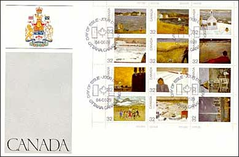
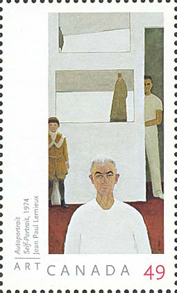
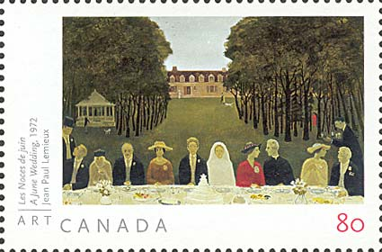
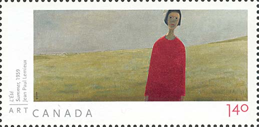
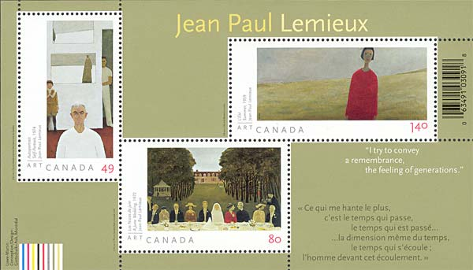

|
Created 12/19/04. Revised:
01/02/05. Copyright © 2004 - 2005 by Victor Manta, Switzerland. All rights reserved worldwide. |
|
JEAN PAUL LEMIEUX (1904 - 1990)
The Difficult Art of Walking on Oneself
I am especially
interested
in conveying the solitude
of man and the
ever-flowing passage
of time. I try to express
this silence in which we
all move.
Born in Quebec City in 1904, Jean Paul Lemieux started painting at an early age. He studied at Montreal's École des beaux-arts and later in France, spending time also in California. He began as mainly a landscape painter but the best-known works of his maturity show sparse, flattened figures against austere backgrounds. Before his death in 1990 he received numerous awards, including the Order of Canada, and he was posthumously made a Grand Chevalier of the Ordre du Québec. Today he remains one of Quebec's most-exhibited artists.
Even if largely known as a landscape painter, and being honored as such by the Canadian Post in 2002 by a large miniature sheet, featuring 12 stamps, Jean Paul Lemieux disliked of being reduced to only one of his creative dimensions. "I'm not a landscape painter. Don't call me that. I like painting figures too much. I sometimes see myself as the central figure, but as a child in the continuity of generations. I like the feeling of summer in the old days, the feeling of old newsreels or photographs. You get the feeling of fading away."
During the Francophonie Summit, art lovers in Beirut were able to explore the work of the renowned Quebec painter. "His Canada" was the title of an exhibition sponsored by the Department of Foreign Affairs and International Trade, the National Archives of Canada, and the Canadian Postal Museum - Canadian Museum of Civilization. It featured 12 paintings commissioned by Canada Post for a set of commemorative stamps issued to mark Canada Day 1984. The canvases depict scenes from each of Canada's 10 provinces plus the Yukon and the Northwest Territories. Lemieux created them over a period of several years, working primarily from memory and his inner store of images. Source: http://www.dfait-maeci.gc.ca/canada-magazine/issue17/17t5-en.asp .
We show below the 1984 sheet (June 29, Scott 1016-1027), presented on a FDC, this just for information purposes. We won't elaborate on it, following master's desire, and because two of the stamps are incorrectly inscribed.

As a father to a daughter, the author of this site was deeply impressed by the sensitive homage that the artist's daughter paid to her father's memory:
"Although, like every creator, he
hoped for recognition and, more importantly, desired to share his view of the
world with a wide public, my father was a shy and simple man, invariably
dismayed at the prospect of finding himself in the spotlight. He, who loved
meeting people privately when his playful side could be allowed free rein, had a
horror of social events. Despite the pleasure he took in having his work on
public view, I recall how he had to force himself to attend his own exhibition
openings.
For the major retrospective organized by the Montreal Museum of Fine Arts in
1967, his name had been inscribed on every one of the steps leading up to the
gallery. As he ascended the staircase, he turned to me and whispered: “I’m
walking on myself.” That said it all.
My father was a role model for me. I admired his determination and his generosity. He was my hero and my friend – a sage and a prophet whose lucidity still impresses me today.
This silence has passed into his painting, which yet speaks to me so clearly. I am deeply affected by his Self-portrait, which he gave to me one day. In this work, Jean Paul Lemieux has brilliantly captured the passage of time though his own life."

Anne Sophie Lemieux
http://national.gallery.ca/english/default_1980.htm#A%20Personal%20Account
Canada Post has honored the visionary painter on October 22, 2004, by issuing a separate stamp and two others, all three reunited in a miniature sheet. A 49¢ domestic-rate stamp, featuring Lemieux's Autoportrait (Self-Portrait), opens the show. The same image accompanies two others on a luxurious souvenir-sheet grouping three stamps at three different denominations: one U.S. rate (80¢) stamp featuring Les Noces de juin (A June Wedding), and an international rate ($1.40) stamp reproducing L'Été (Summertime).
Lemieux's "Autoportrait" (see above), painted in 1974 and featured on the 49-cent domestic stamp, is a synthesis of the man and his work. The composition highlights Lemieux's work because, beyond the solitude and the melancholy, one perceives a deep humanism flowing from the man and his paintbrush. It is the work of a mature artist, in full command of his gift; sober, discreet and, above all, of an extreme simplicity.

In 1972, Lemieux painted "Les Noces de juin" (The June Wedding, featured on the U.S. rate stamp), one of the few Lemieux works that is populated by a large number of characters. Done in fresco style, it is a painting of unremitting melancholy, as if to say that even in a crowd we are shrouded in solitude. This painting resembles the renown work of Leonardo da Vinci "The Last Supper" but we'll prudently abstain from developing this too obvious idea.

"L'Été" (The Summer, featured on
the international-rate stamp) portray great spaces, prominent horizons and
solemn figures. While it apparently forms part of the background, the girl's
silhouette in L'Été is nonetheless clearly distinct from it, especially due to
the bright color of her dress. The effect achieved is one of an imaginary world
of distant dreams, marked by tender nostalgia. After:
http://www.communitycontent.ca/releases/details.asp?releaseID=980
Note: the small spot near girl's
hair is really present on the stamp (see also below, on the sheet).

Jean Paul Lemieux minimalist style clearly was edging toward abstractionism or reductionism, but he never created totally abstract art, what assured him and his work a faster understanding, a general appreciation and the resulting popularity.
Background: Janvier a Quebec, by
Jean-Paul Lemieux.
Credits: To Blair Stannard, a Canadian philatelists, with many thanks for the
miniature sheet and for the article of Anne Sophie Lemieux.
Link: Canadian Art Series, on this site.
|
Created 12/19/04. Revised:
01/02/05. Copyright © 2004 - 2005 by Victor Manta, Switzerland. All rights reserved worldwide. |
|